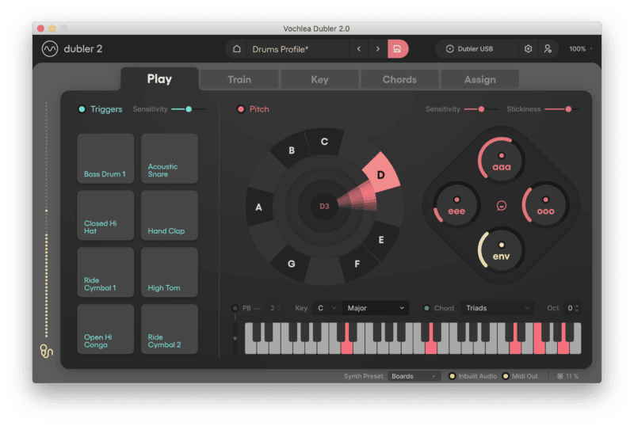
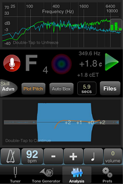
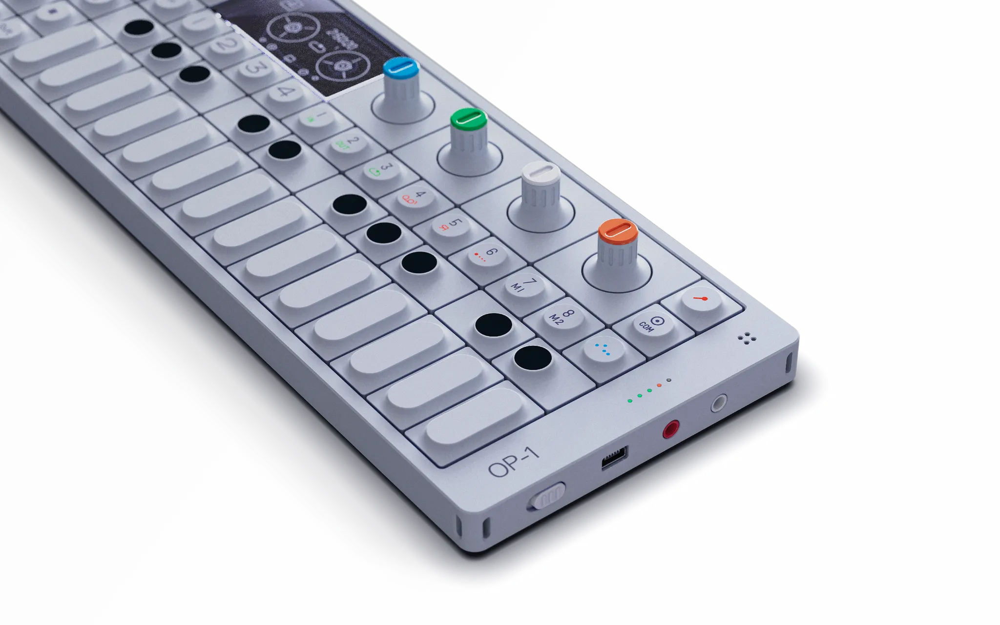
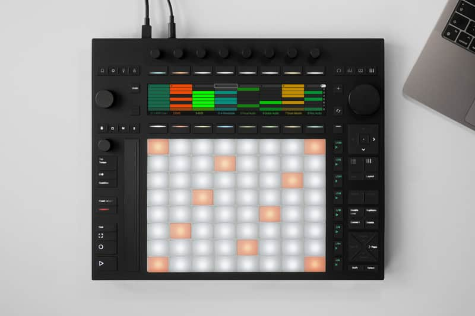
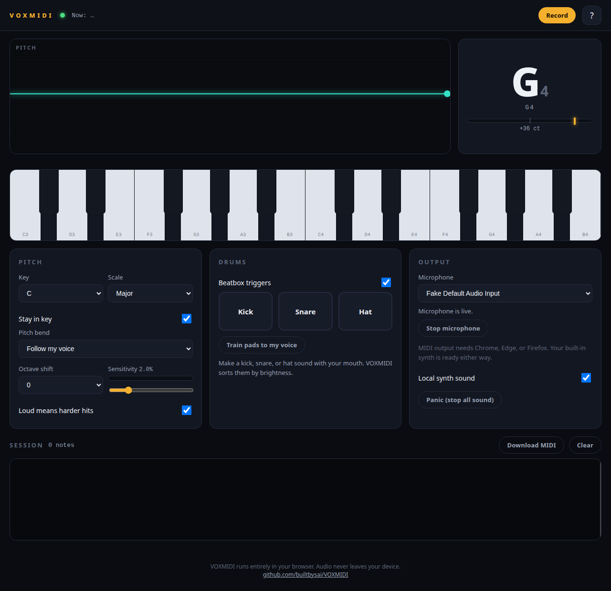
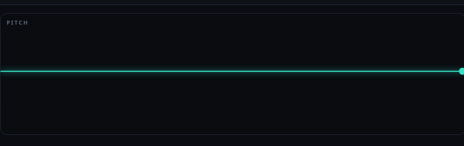
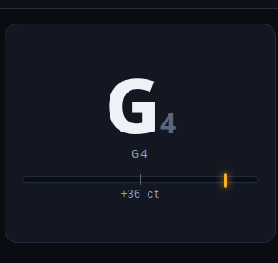
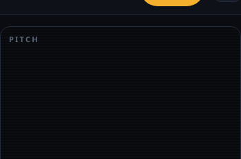
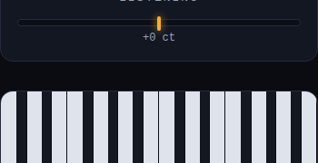

Not slop. Not yet designed.
VOXMIDI turns humming, singing, or beatboxing into MIDI in the browser. The DSP is real and the code is honest. What it lacks is a design idea: the interface fights the performance moment it exists to serve. This review corrects its own earlier research errors, shows its evidence, and says plainly what was tested and what was not.
Claims carry their evidence tier
Assumptions, stated once. The reviewer has no microphone in this environment, so every screenshot shows the app idle or with simulated input. Idle-state observations are labeled as such; they are not performance findings. Reference interfaces were studied from published reviews and product documentation, not from hands-on use; each cites its source. Nothing here changes VOXMIDI's code.
What headless testing cannot do: establish pitch accuracy, audio latency, MIDI timing, microphone reliability, or how any of it feels with real sound. Those questions get a test protocol below instead of a verdict.
Four references, honestly this time
The previous version of this review used these four products to support one conclusion: separate performance from configuration. That was too neat, and in one case the evidence contradicted the claim. Each reference below shows what was claimed before, what the evidence actually shows, and the lesson that survives correction.

Vochlea Dubler 2
Previously claimed: "Opens on Play, the performance view. Setup lives in other tabs. Performance and configuration are different rooms."
Observed The Play tab keeps two Sensitivity sliders, a Stickiness slider, Key and scale selectors, chord type, octave shift, eight drum trigger pads, and vowel controls visible on the performance screen. Training, chord mapping, and assignment live one tab away. Sound on Sound's review confirms the Pitch section's input level and Stickiness controls sit on the Play tab.
The honest lesson is frequent versus infrequent, not performance versus setup. Dubler 2 keeps the controls a performer touches mid-session within reach and moves the rest one tab away. VOXMIDI's key, scale, and sensitivity selectors are legitimately mid-performance controls; a singer changes key between songs. The failure is not their presence. It is that they sit at equal weight with set-up-once choices like the mic device picker, pad training, and MIDI routing.

TonalEnergy tuner
Previously claimed: "One question: am I on the note. Pitch feedback is one thing, shown large and fast."
Observed TonalEnergy is a full practice suite: tuner, metronome, waveform and harmonic analysis, recorder, tone generator, ear training, per its feature list. The analysis screen above is dense: frequency graph, cents readout, plot controls, four tabs. It is not simple.
The honest lesson is dominance hierarchy, not simplicity. TonalEnergy's main tuner screen leads with one dominant visual (a large animated tuner with a smiley reward on pitch) while note name, octave, and cents sit subordinate around it, and the rest of the toolkit stays one tap away. For VOXMIDI: make the primary feedback the biggest thing on screen and subordinate the rest. Do not pretend the product is one question when it ships four capabilities.

Teenage Engineering OP-1
Previously claimed: "Power on and it is playable. The instrument is the interface."
Observed The OP-1 is hardware: four physical knobs that act as macro controllers per synth engine, tactile keys, and a tiny OLED you barely read. Its screen can be small because hands know where they are without looking. Latency is zero because it is a circuit, not a browser tab.
The lesson inverts for a screen instrument. What transfers: decide-for-the-user defaults (four knobs means four parameters, no more), visual metaphor over labels, constraints that accelerate decisions. What does not: minimizing screen attention. The OP-1 avoids the screen because hands are busy; VOXMIDI's screen is the only feedback channel. It must earn the singer's eyes, not avoid them. The previous review had this backwards.

Ableton Push
Previously claimed: "Head down, do not look at your monitor. A performance surface must work at a glance."
Observed Push's "don't look at the monitor" works because Push has its own display and 64 tactile pads: attention moves to hardware, not away from feedback. In Key mode the pads show only in-scale notes (root highlighted); the Scale button changes key and scale.
What transfers is the constraint, not the glanceability. In Key mode makes a novice musical without theory by removing wrong notes. VOXMIDI already has "Stay in key" but never visualizes it; drawing the trace against scale lanes is this lesson applied. What does not transfer: the glance claim. A singer watching a screen for pitch feedback needs sustained attention, which is a harder design problem than peripheral glances, and the honest version of this review admits it.
Revised design thesis
The voice is the instrument. The screen must earn the singer's eyes.
VOXMIDI is played with the mouth and watched with the eyes, and the screen is the only feedback channel it has. Mid-performance the singer needs one dominant answer: what note am I on, and am I in the key. The corrected research reshapes the old three-rooms idea into something defensible:
One dominant feedback surface. The note readout and the pitch trace become a single instrument, the trace drawn against the lanes of the chosen key and scale. This is the mirror; it is the biggest thing on screen because it is the thing being watched.
Frequent controls stay, subordinate. Key, scale, and sensitivity are mid-performance controls. Dubler 2's actual pattern keeps them on the performance screen but visually quieter than the feedback. Set-up-once choices (mic device, pad training, MIDI routing) move out.
The keyboard echoes. It lights the key being sung. It is the visual echo of the voice, not a second instrument competing for space.
The studio, annotated
Live studio captured headless at 1280px, idle (no microphone in this environment). Select a marker to highlight its finding; select a finding to pulse its marker. Select any image to view it at native resolution.

- 1ObservedThe hero is blank. The trace panel is the largest surface on screen. Idle, it shows a flat line in an empty box. A mirror with nothing in it. The concept shows what this surface is for.
- 2ObservedThe best element, trapped. The note readout (G4, +36 ct) is the most alive thing in the app, sitting in a card identical to the other six.
- 3InferredProminence misstates role. The keyboard takes major vertical space as an audition tool, but never echoes the sung note. It reads as a second instrument competing with the voice.
- 4ObservedSetup at full weight. Key, scale, pitch bend, octave, sensitivity: all visible at once, all the same visual weight as the feedback.
- 5ObservedHalf dead space. The DRUMS card holds three pads, a training button, and empty air. Pad training is setup work wearing a performance costume.
- 6ObservedConfiguration, not performance. The OUTPUT card (mic picker, MIDI routing notes) answers questions nobody asks mid-song.
- 7ObservedA placeholder ships visible. "Now: ..." sits in the top bar where the live note should be.
- 8InferredOne visual language for every action. Seven pill buttons; Record (primary) competes with Clear (tertiary). Shape and emphasis do not communicate importance.
- 9ObservedEmpty chrome for an empty state. "SESSION 0 notes" with a vacant box. An empty box waiting for content is not a feature.


390px holds up structurally, fails evidentially
Nothing breaks at 390px, which is to the app's credit. But the full-page screenshot shrinks interface labels to a few pixels, so the crops below carry the actual evidence.


Observed "Now: ..." wraps broken in the top bar at 390px ("Now:" on one line, "..." below). Inferred The settings stack below the fold with no visual end; on a phone the performance screen never resolves into a finished view.
What headless testing actually verified
Run 2026-10-12 against a local copy of the live build, driving the real UI through Chrome DevTools Protocol: tab walks, keyboard activation, record state transitions, and source inspection. The previous review claimed "everything works" from screenshots alone. These are the claims that survive contact with the app.
Verified Keyboard walk: 20 stops, one exclusion
Tabbing through the studio reaches every control: help, key and scale selects, quantize toggle, pitch bend, octave, sensitivity slider, velocity and drum toggles, three drum pads, pad training, mic enable, synth toggle, Panic, Clear, and Record. Arrow keys change the key select without interrupting state. The 24 piano keys are not in the tab order at all. They are <div> elements with pointer-only handlers, and #keyboard carries aria-hidden="true": the keyboard is invisible to keyboards and to screen readers alike.
Verified No visible focus indicator
The stylesheet contains no :focus rules. A keyboard user can operate the controls but can never see where they are. This fails WCAG 2.4.7 (focus visible).
Verified Record state machine is sane
Space on the focused Record button toggles the label to Stop and the count to "Recording..."; stopping restores it. With zero notes captured, Download MIDI stays disabled: the empty case is handled, not left as a dead button.
Verified No-MIDI path degrades gracefully (code)
The engine feature-detects requestMIDIAccess. Without it, the MIDI selector offers "Built-in synth only" with the copy "MIDI output needs Chrome, Edge, or Firefox. Your built-in synth is ready either way." The fallback was read in source, not just in the screenshot.
Observed What no headless test can touch
Pitch accuracy, audio latency, MIDI timing, microphone reliability, distinguishing silence from poor detection, drum trigger feel, and the populated session list. The protocol below is for a real microphone.
Eight tests for a real mic
These are the questions screenshots cannot answer. Each takes under a minute. Do them in order; stop at the first one that fails and that is the finding.
- Steady tone. Hum A4 for five seconds. Expect A4 within 10 cents and a flat trace on the A lane. If the readout flutters between notes, the tracker not the UI is the problem.
- Slow glide. Slide from C4 to C5 over four seconds. The trace should follow continuously and note names should update without flickering back and forth.
- Scale run. Sing a C major scale with Stay in key on. The session list should contain no out-of-scale notes.
- Beatbox. Do eight bars of kick, snare, hat. Each pad should trigger on the right sound and ignore the others.
- Record and export. Record thirty seconds of melody, download the .mid, open it in a DAW. Check the timing against what you sang.
- Latency feel. Clap once and watch the trace. How long before it reacts? Under 50ms feels instant; over 150ms feels broken.
- Quiet voice. Hum at arm's length. Where does detection give up, and does the sensitivity slider move that point in a way you can feel?
- Noise. TV on in the background. False triggers? Which sounds confuse it?
The proposed instrument, running
A review should not only describe the better experience; it should show it. This is an interactive mock of the merged performance screen from the thesis: one feedback surface (note readout plus trace against scale lanes), the keyboard echoing the sung key, and the frequent controls (key, scale, sensitivity) kept subordinate on the performance screen. Data is simulated; there is no microphone involved. It proves the layout idea, not the DSP.
Ordered by impact, not by taste
Will break the product
These exclude users. Non-negotiable.
- F1Make the piano keyboard operable. Rebuild the 24 keys as real buttons, remove
aria-hidden, give each an accessible name. A pointer-only, AT-invisible keyboard on a music app is a hard failure. Verified - F2Add visible focus styles.
:focus-visibletreatment for every interactive element. Keyboard users currently fly blind. Verified
Will weaken the product
These will not cause failure, but they keep the app mediocre instead of good.
- F3Merge the note readout and the trace into one dominant feedback instrument. Trace against the lanes of the selected key and scale, note named large at the trace head. The separate G4 card disappears into it. Demonstrated above. Inferred
- F4Subordinate, do not banish, the frequent controls. Key, scale, and sensitivity stay on the performance screen, visually quieter than the feedback. Mic device, pad training, and MIDI routing move to Setup. This is what Dubler 2 actually does. Observed
- F5Design the empty states or hide the chrome. "Now: ..." becomes the live note or goes away. The session box appears after the first recording, not before. Observed
- F6One button language. Record keeps the primary treatment; everything else shares one quieter style. Shape and emphasis should communicate importance. Inferred
- F7Fix the mobile keyboard. Fold octaves or scroll horizontally; fifteen keys at 26px are not comfortably tappable. Observed
- F8Retire the letterspaced-caps costume. One display face for the note, one quiet face for labels. Inferred
Worth considering
Genuinely optional. Honest about being preference-adjacent.
- F9Visualize "Stay in key." The Push lesson: light the scale lanes so the constraint is visible, not just a toggle. Inferred
- F10One name for input gain. Onboarding says "raise the input gain"; the studio control says "Sensitivity". Observed
Keep this
- Microcopy. "Panic kills all sound instantly if a note sticks." "Locked on. Nice." Plain, human, specific.
- The privacy footer. "Audio never leaves your device." A real differentiator, well placed.
- Four-step onboarding, every step skippable, with satisfying lock-on feedback on the hum test.
- The help modal is real documentation, not filler.
- The note readout is the seed of the thesis: big, instant, the one thing that already behaves like a mirror.
- The no-MIDI fallback degrades gracefully with honest copy instead of a dead end.
The one question
What does the screen tell a singer mid-phrase that their ears don't already tell them?
If the answer is nothing, the mirror is decoration. Every fix above is a way of giving that question a better answer.